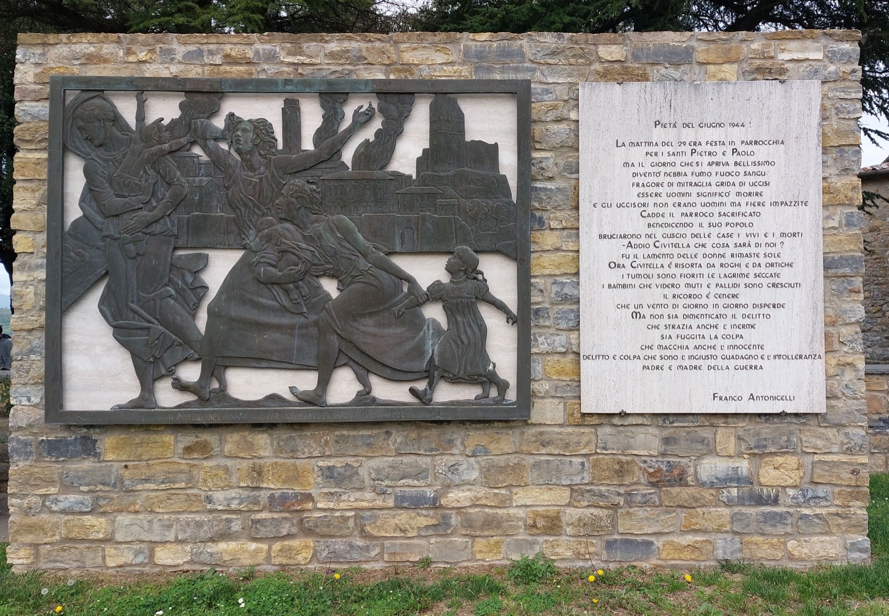

Storia
Dalle origini etrusco-romane alla distruzione medievale, dall'eccidio nazifascista del 1944 alla Marcia per la pace che ogni anno lo ricorda: un percorso attraverso i secoli che hanno segnato il territorio.
Leggi la storiaUn piccolo archivio dedicato a Civitella in Val di Chiana: un comune composto da un borgo storico e quattordici frazioni, tra le colline del Chianti e la pianura della Val di Chiana.
Esplora le frazioni
Civitella in Val di Chiana è un comune di circa 9.000 abitanti situato a una quindicina di chilometri a sud-ovest di Arezzo. Il capoluogo storico, un borgo collinare a 525 metri di altezza con la sua Rocca medievale, convive con quattordici frazioni sparse tra le colline e la pianura della Val di Chiana — dove oggi vive la maggior parte della popolazione.

Dalle origini etrusco-romane alla distruzione medievale, dall'eccidio nazifascista del 1944 alla Marcia per la pace che ogni anno lo ricorda: un percorso attraverso i secoli che hanno segnato il territorio.
Leggi la storia
Un territorio a cavallo tra le prime propaggini dell'Appennino e la pianura della Val di Chiana, con vigneti di Chianti e oliveti che ne disegnano il paesaggio.
Scopri il territorio
Civitella (capoluogo storico), Albergo, Badia al Pino, Ciggiano, Cornia, Gebbia, Matroia, Oliveto, Pieve a Maiano, Pieve al Toppo, Ponticino, Spoiano, Tegoleto, Tuori e Viciomaggio: quindici volti dello stesso comune.
Vedi tutte le frazioni